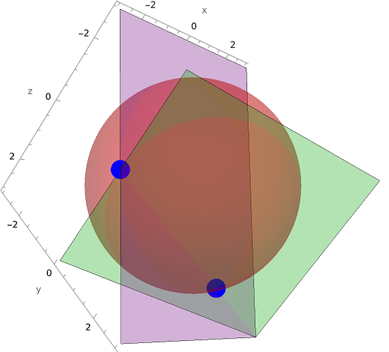

Symbolic Solver
The below is copied from my post over at julia discourse.
August 2024
A new symbolic solver authored by me has just been merged to Symbolics.jl, and is available in the latest release (v6.2.0). I want to share some of its capabilities here!
Link to PR
The solver features:
- Multivariate polynomial solving
- Exact (symbolic) solutions
- Solving using isolation and attraction (inspired by a paper from R. W. Hamming)
Examples and usage
Solving with parameters and transcendental functions:
julia> @variables a b c d e x;
julia> symbolic_solve(a*log(x)^b + c ~ 0, x)
1-element Vector{SymbolicUtils.BasicSymbolic{Real}}:
e^((-c) / a)^(1 / b))
Solving by detecting polynomialization opportunities (\(9^x + 3^x = 0\) and the like also works)
julia> symbolic_solve(sin(x^2 +1)^2 + sin(x^2 +1) + 3)
4-element Vector{SymbolicUtils.BasicSymbolic{Complex{Real}}}:
(1//2)*√(-4(1 - asin((1//2)*(-1 + (0 + 1im)*√(11))) - (π*2var"##426")))
(-1//2)*√(-4(1 - asin((1//2)*(-1 + (0 + 1im)*√(11))) - (π*2var"##426")))
(1//2)*√(-4(1 - asin((1//2)*(-1 - ((0 + 1im)*√(11)))) - (π*2var"##429")))
(-1//2)*√(-4(1 - asin((1//2)*(-1 - ((0 + 1im)*√(11)))) - (π*2var"##429")))
Solving high degree polynomials exactly:
julia> expr = expand((x + 2)*(x^2 + 2x + 1)*(x^4 - 3x^3 + x + 5)*(x^4 - 1))
-10 - 27x - 25(x^2) - 3(x^3) + 22(x^4) + 34(x^5) + 24(x^6) + 2(x^7) - 12(x^8) - 7(x^9) + x^10 + x^11
julia> symbolic_solve(expr, x, dropmultiplicity=false)
9-element Vector{Any}:
-2
-1
(-1//2)*(0 + 2im)
Also works with parameters:
julia> expr = expand((x + b)*(x^2 + 2x + 1)*(x^2 - a))
-a*b - a*x - 2a*b*x - 2a*(x^2) + b*(x^2) + x^3 - a*b*(x^2) - a*(x^3) + 2b*(x^3) + 2(x^4) + b*(x^4) + x^5
julia> symbolic_solve(expr, x, dropmultiplicity=false)
5-element Vector{Any}:
-1
-1
-b
(1//2)*√(4a)
(-1//2)*√(4a)
Exact intersection of a sphere and a line in \(\mathbb{C}^3\):
julia> symbolic_solve(
[x^2 + y^2 + z^2 - 9,
x - 2y + 3,
y - z]
,[x,y,z])
2-element Vector{Any}:
Dict{Num, Any}(z => 2, y => 2, x => 1)
Dict{Num, Any}(z => 0, y => 0, x => -3)
For the example above, we can check our answers by plotting everything. As expected there are only 2 intersections with the same coordinates our solver found:

System of polynomials with infinite solutions are solved in terms of one of the variables:
julia> symbolic_solve([x*z - y - 1, x + z], [x, y, z])
1-element Vector{Dict{Num, Any}}:
Dict(z => z, y => -1 - (z^2), x => -z)
Note and credits
Many thanks to alex and shashi for being great mentors throughout the project’s length!